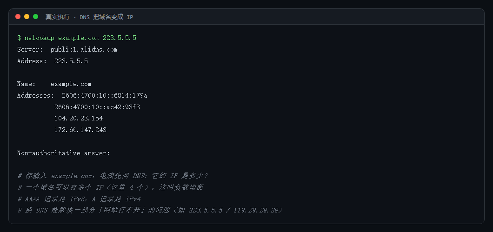
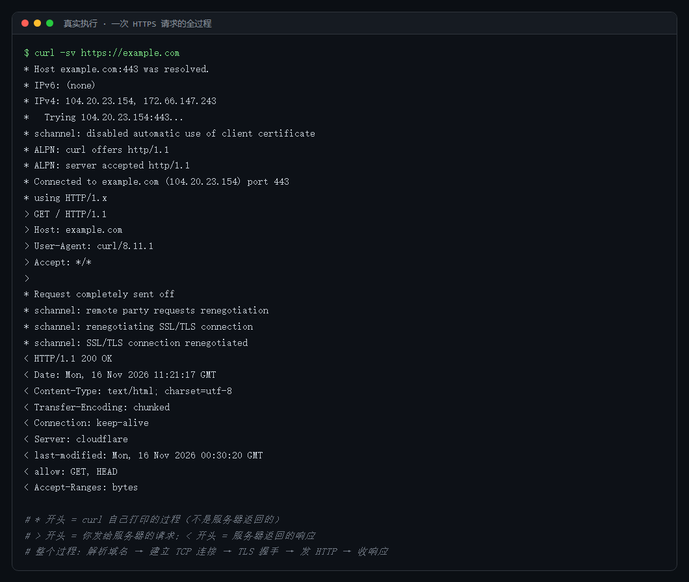
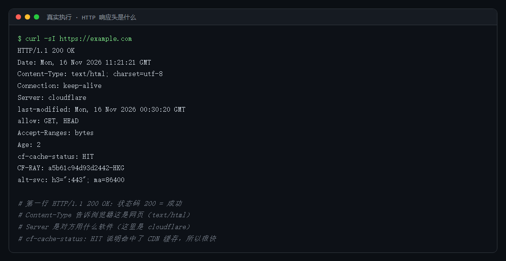
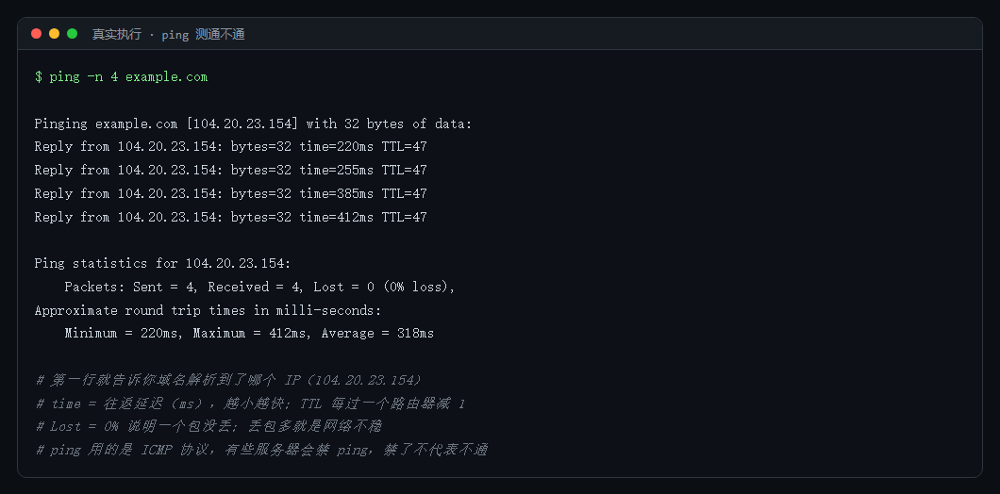
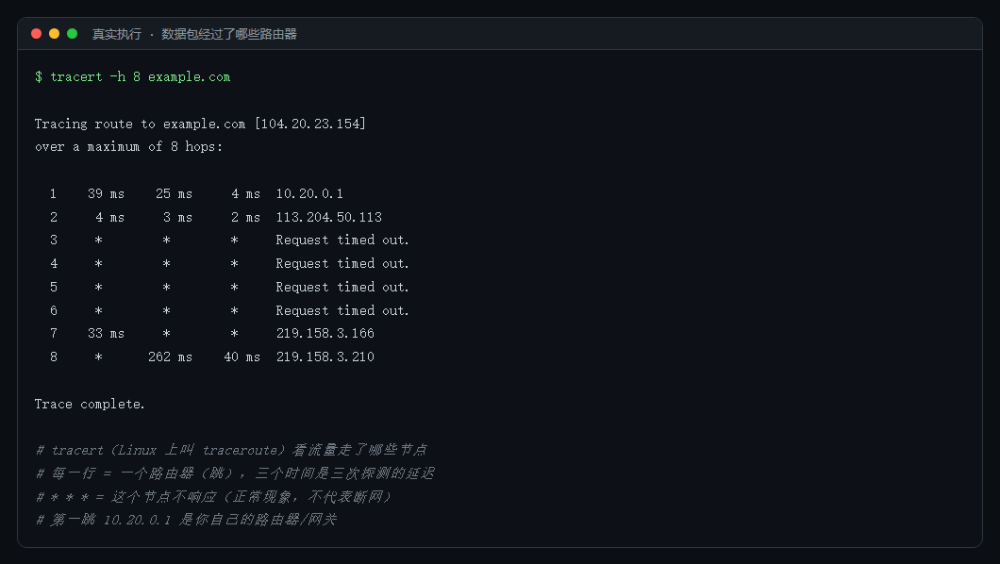
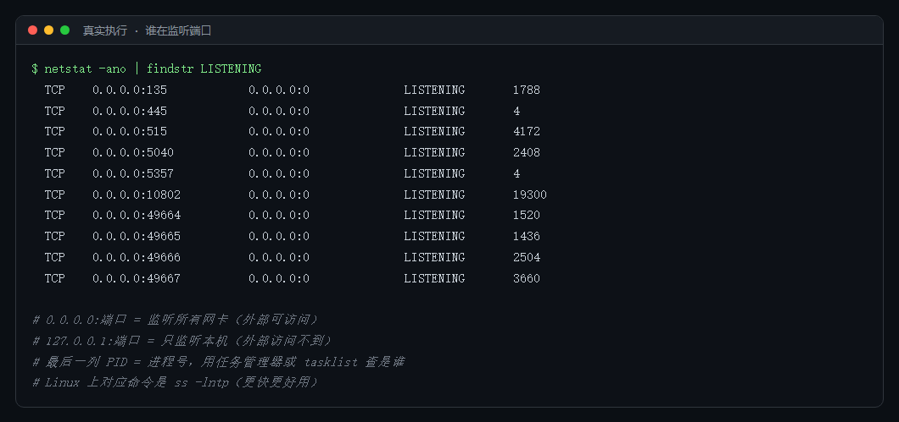

计算机网络
🟢 本章所有截图都是在你电脑上真实执行的，IP、延迟、证书链都是真的
0 输入网址后，发生了什么
搞懂这条链路，90% 的"网站打不开"你都能自己定位。
你在浏览器输入 https://example.com
↓
① DNS 解析：example.com → 104.20.23.154 （问路）
↓
② TCP 连接：和这个 IP 的 443 端口建立连接 （敲门）
↓
③ TLS 握手：协商加密、验证证书 （对暗号）
↓
④ 发 HTTP 请求：GET / HTTP/1.1 （点菜）
↓
⑤ 服务器返回：200 OK + HTML （上菜）
↓
⑥ 浏览器解析 HTML，再请求 CSS/JS/图片，渲染成页面🧠 四件套记牢：IP 找到机器 → 端口找到程序 → DNS 把名字变成 IP → HTTP 是它们说的话。
1 IP 与端口
IP 定位"哪台机器"，端口定位"机器上的哪个程序"。
| 概念 | 类比 | 例子 |
|---|---|---|
| IP 地址 | 门牌号 | 104.20.23.154 |
| 端口 | 房门号 | 80 / 443 / 22 |
| 域名 | 店名 | example.com |
| 端口 | 干什么的 |
|---|---|
| 22 | SSH 远程登录 |
| 80 | HTTP（明文网页） |
| 443 | HTTPS（加密网页） |
| 3306 / 6379 | MySQL / Redis |
| 3000 / 8000 / 8080 | 本地开发常用 |
⚠️ 127.0.0.1 是"本机自己"，从外面永远访问不到。服务器上程序只监听它，就必须靠 Nginx 转发。
2 DNS：把域名变成 IP
人记不住 IP，所以有了域名；DNS 负责把名字翻译成 IP。

真实执行：用公共 DNS 查询 example.com
1
一个域名可以对应多个 IP（这里 4 个），这叫负载均衡
2
AAAA 是 IPv6 记录，A 是 IPv4 记录
3
域名解析要等 TTL 过期才生效——改完解析没变化，先等几分钟
🔧 换 DNS 能解决一部分打不开：223.5.5.5（阿里）、119.29.29.29（腾讯）。
但国内 DNS 查海外站可能被污染，这时候才需要别的办法。
但国内 DNS 查海外站可能被污染，这时候才需要别的办法。
3 TCP 与三次握手
TCP 保证"东西一定送到，且顺序不乱"。建立连接要握三次手。
客户端 服务器
│ ① SYN (我想连你) │
│ ──────────────────────────▶ │
│ ② SYN+ACK (好，我也连你) │
│ ◀────────────────────────── │
│ ③ ACK (收到，开始吧) │
│ ──────────────────────────▶ │
│ ✅ 连接建立 │💡 为什么要三次？双方都要确认"我能发出去"和"我能收到"，少一次就有一方不确定。
⚠️ "连接超时" ≠ "网站挂了"：可能只是 443 端口不通（防火墙/安全组/服务器没开）。
4 HTTP 与 HTTPS
HTTP 就是"一问一答"的文本协议；HTTPS = HTTP + 加密。
一次真实请求的全过程

真实执行：curl -v 打印出 DNS 解析 → TCP 连接 → TLS 握手 → 请求 → 响应
| 符号 | 含义 |
|---|---|
* | curl 自己打印的过程信息（不是服务器返回的） |
> | 你发出去的请求 |
< | 服务器返回的响应 |
响应头长什么样

真实执行：curl -sI 只取响应头
| 状态码 | 意思 |
|---|---|
| 200 | 成功 |
| 301 / 302 | 跳转（换了地址） |
| 304 | 没变化，用你本地的缓存 |
| 400 | 你发的请求格式不对 |
| 401 / 403 | 没登录 / 没权限 |
| 404 | 路径不存在 |
| 500 | 服务器代码报错 |
| 502 / 504 | 网关后面的程序挂了 / 超时 |
🔒 HTTPS 三个作用：加密内容（别人看不懂）、验证身份（证书证明你是你）、防篡改（中间人改不了）。
5 五个排查工具
按顺序用，基本能定位到是哪一层的问题。
① ping —— 通不通

真实执行
ping 用的是 ICMP，有些服务器禁 ping。禁了不代表网站不通，继续往下测。
② nslookup —— 域名解析对不对
见第 2 节。如果这里就查不到，说明 DNS 有问题，后面都不用测了。
③ tracert —— 路走到哪断了

真实执行：Linux 上叫 traceroute
④ curl —— 接口通不通（最有用）
curl -I https://example.com # 只看响应头
curl -v https://example.com # 看全过程
curl -s -o /dev/null -w "%{http_code}\n" https://example.com # 只要状态码⑤ netstat / ss —— 端口有没有在听

真实执行（Linux 上对应 ss -lntp）
| 看到什么 | 说明 |
|---|---|
0.0.0.0:8080 LISTENING | 所有网卡都在听，外部能连 |
127.0.0.1:8000 LISTENING | 只有本机能连，外部连不上 |
| 什么都没有 | 程序根本没起来，或端口写错了 |
6 打不开怎么判断
按这个顺序查，一步排除一层。
| 现象 | 大概率是 | 先查什么 |
|---|---|---|
| 浏览器显示"找不到服务器" | DNS 挂了 / 域名没解析 | nslookup 域名 |
| 一直转圈然后超时 | 端口不通（防火墙/安全组） | curl -I 看是拒绝还是超时 |
| 能打开但很慢 | 网络延迟 / 服务器负载 | ping 看延迟 |
| 提示"证书无效" | HTTPS 证书过期或域名不匹配 | 看证书有效期，重新申请 |
| 502 Bad Gateway | 后端程序挂了 | 服务器上 systemctl status |
| 只有自己打不开，别人能打开 | 本地 DNS 缓存 / hosts 文件 | ipconfig /flushdns |
✅ 万能顺序：DNS（解析）→ TCP（连通）→ HTTP（协议）→ 应用（服务）。
从下往上，哪一层失败就停在哪。
从下往上，哪一层失败就停在哪。